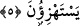
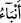
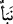
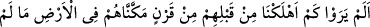
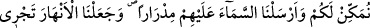
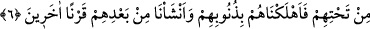

5. Gerçekten onlar, kendilerine Hak geldiğinde onu yalanlamışlardı. Fakat
yakında onlara alay ettikleri şeyin haberleri gelecektir.
“İşte, kendilerine gelen hakkı da yalanladılar”. Hak, Kur’an’dan ibarettir. Onlar ise
Kur’an’dan onun her âyetinden yüz çevirmişlerdir. Yaptıklarının çirkinliğini vurgulamak
için Kur’an’a hak denilmiştir. Çünkü hiç kimsenin hakkı yalanlaması düşünülemez.
Bu âyet, önceki âyetin devamı mâhiyetindedir. Aslında ondan farklı değildir. Onun
ardından ya da önceki âyet sebebiyle meydana gelmektedir. Hatta aslında birincisi
ikincisinin aynısıdır. Buradaki sıralama, izâfî olarak birbirinden farklı olmaları
sebebiyledir. Nitekim aynı durum aşağıdaki âyet-i kerîmede de söz konusudur: “İnkâr
edenler; bu (Kur’an), yalandan başka birşey değildir. (Muhammed) onu uydurdu.
Başka bir topluluk da kendisine yardım etti.” buyurulduktan sonra devamla: “kesin
bir haksızlığa ve iftiraya vardılar.” (Furkan 25/4) buyurulmuştur. Burada da onların
yaptıkları kesin haksızlık ve iftira, kendilerinden nakledilen sözlerinden başka bir şey
değildir.
Fakat âyetin son kısmı, mefhum olarak öncesinden farklı ve durumu daha çirkin olduğu
için onları korkutmak üzere böylece birbirine bağlanmıştır.
Keza, tefsîrini yapmakta olduğumuz âyette hakkı yalanlamak, önceki âyette ifade
edilen yüz çevirmeden daha çirkin olduğundan tamamen bâtıl olduğunu ortaya koymak
için bâtıl mevkiine yükseltilmiştir. Sonra da hiç düşünmeden âyetleri inkara yeltenmenin
çirkinliğini tekid etmek üzere yaptıklarının bâtıllığı bildirilmiştir.
Mana şöyledir: “İnkarcılar, kendilerine gelen âyetlerden yüz çevirip hiç
düşünmeksizin derhal yalanlamakla, esasen tekzib edilmesi mümkün olmayan bir
hakikatı reddetmişlerdir.”
“Fakat alay ettikleri şeyin haberleri yakında kendilerine gelecektir.”
“
” lafzı, “ ”in çoğuludur. Büyük ve önemli haber demektir. “Alay ettikleri şey”
yukarıda geçen “hak”dır. Onun “haberler”i ise, inkâr etmeleri sebebiyle uğratılacakları
dünyevî cezalardır. Yani âyetlerle alay etmenin nereye varacağını bileceklerdir. Nitekim
Allah onları Bedir günü mü’minlerin kılıçları ile cezalandırmıştır.
6. Görmediler mi ki, onlardan önce yeryüzünde size vermediğimiz bütün
imkânları kendilerine verdiğimiz, gökten üzerlerine bol bol yağmurlar indirip